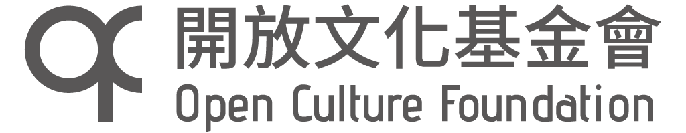

近期活動
專案與成果
工作計畫
贊助者
首頁
近期活動
專案與成果
工作計畫
贊助者
加入行動
OCF 行政中心
OCF
開設獨立帳戶、收款取款、對帳、製作報表、開立收據... 一點都不迷人的繁瑣的行政庶務，卻是在幕後默默支援所有專案、不可或缺的基礎建設。如果您無法決定要贊助哪個專案，就贊助我們吧！健康的行政中心讓所有專案都共同受益。
贊助專案
國際開源大使團
clkao (OCF 董事)
OOO、OOO、OOO... 開源人不該缺席的國際盛會，讓台灣優秀學生也能參與！本計畫贊助台灣學生出國所需的交通、住宿費用，並舉辦募款講座，接受贊助者回國後必須向國人分享所見所聞，讓計畫效益擴散，同時替下一屆的經費尋求贊助。
贊助專案
開放文化影展
bobchao (OCF 董事)
資訊自由鬥士 Aaron Swartz 精彩生平、OOO、OOO... ，開放文化的風在全球各地吹起，精心拍攝的電影、紀錄片，凝聚了箇中精華。本計畫洽談影片授權、翻譯成正體中文、製作字幕並上映，讓國人一睹開放文化的風采。
贊助專案
g0v 大松
g0v 揪松團
g0v 零時政府發源地——固定雙月月底舉辦的 g0v 大松，工程師、設計師、律師、學者、NGO 工作者、公務員... 一起動手改變世界，現場提供源源不絕的食物，讓大家盡情 hack、eat、hack！開放任何人免費報名，場地餐點等費用皆來自贊助。
贊助專案
加入志工
COSCUP 開源人年會
COSCUP 工作小組
一年一度的盛會，讓開放原始碼的開發者、使用者與推廣者齊聚一堂，世界各地專家分享寶貴經驗，替全球 FLOSS 社群注入活力與創意。演講之外還有工作坊、社群 BoF 小聚，開放任何人免費報名，場地餐點硬體等開支皆來自贊助。
贊助專案
加入志工